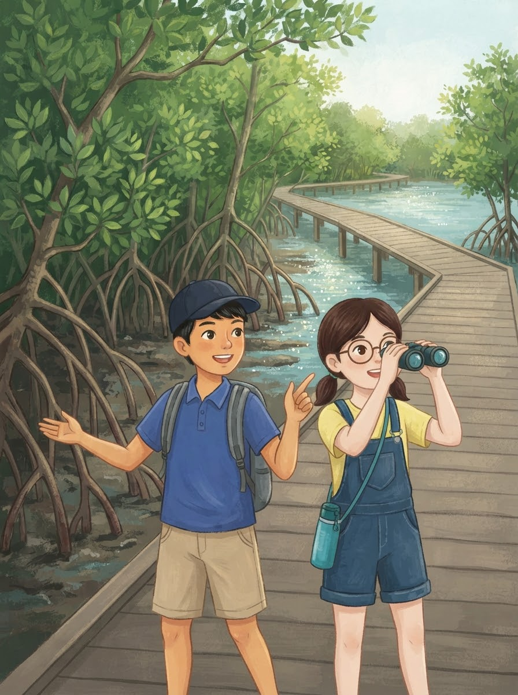

Storybook Reader
《濱海綠寶石：藍碳小守護者》
跟隨宥安與芷蔚的足跡，探索紅樹林生態奇蹟與藍碳保衛戰
頁數 1 / 10
潮間帶探險

綠寶石海岸的邀請
核心導讀概念
認識河口潮間帶的環境特質與紅樹林分佈。
在海與河交界的高鹽度潮間帶，繁茂的紅樹林像是一串鑲嵌在海岸線上的綠寶石。六年級的宥安與芷蔚踏上木棧道，展開了一場濕地生態探險。眼前一片翠綠的樹冠下，藏著無數適應潮汐漲退的生命奇蹟。
動動腦時間：
你有觀察過海水與淡水交界處的植被有何特別之處嗎？